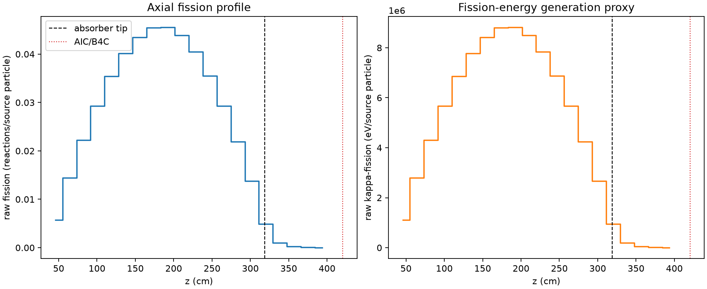
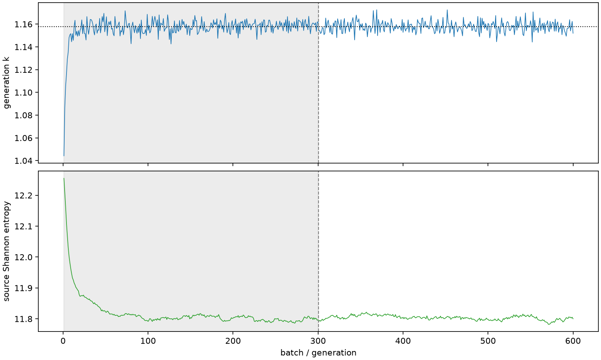

| field | value |
|---|---|
| experiment | V2-STAGE_128_OGRENCI_03-0001 |
| k | 1.1579126603721395 |
| MC standard error | 0.0001812061318224335 |
| seconds | 960.2527888910045 |
| acceptance | not_assessed |
| convergence | review_required |
Completed is output integrity only; physical and statistical review required. Zero tallies do not prove zero production or zero uncertainty.
| diagnostic | value |
|---|---|
| geometric fuel voxels | 5280 |
| zero fission tally voxels | 0 |
| low signal fuel voxels | 405 |
| low signal fission share | 8.123946638422733e-05 |
| low signal kappa share | 8.12680537112874e-05 |
| important fission share | 0.9500833580088259 |
| previous filter included | 4875 |
| duration estimate s | 1562.5173488400023 |
| actual minus estimate s | -602.2645599489979 |
| fission relative MC error | statistics |
|---|---|
| all_geometric_fuel | {"voxels": 5280, "positive_mean_voxels": 5280, "zero_mean_voxels": 0, "undefined_relative_error_voxels": 0, "median": 0.010462036019193786, "p95": 0.29362828288287895, "maximum": 0.7563285184183071} |
| low_signal | {"voxels": 405, "positive_mean_voxels": 405, "zero_mean_voxels": 0, "undefined_relative_error_voxels": 0, "median": 0.35159532256836007, "p95": 0.5502047068357101, "maximum": 0.7563285184183071} |
| important_95pct | {"voxels": 3468, "positive_mean_voxels": 3468, "zero_mean_voxels": 0, "undefined_relative_error_voxels": 0, "median": 0.008748442762234302, "p95": 0.013511708115001473, "maximum": 0.015758468141305014} |
| outside_previous_filter | {"voxels": 405, "positive_mean_voxels": 405, "zero_mean_voxels": 0, "undefined_relative_error_voxels": 0, "median": 0.35159532256836007, "p95": 0.5502047068357101, "maximum": 0.7563285184183071} |
| kappa_fission relative MC error | statistics |
|---|---|
| all_geometric_fuel | {"voxels": 5280, "positive_mean_voxels": 5280, "zero_mean_voxels": 0, "undefined_relative_error_voxels": 0, "median": 0.010449964195052862, "p95": 0.29314617511181523, "maximum": 0.7547724608142183} |
| low_signal | {"voxels": 405, "positive_mean_voxels": 405, "zero_mean_voxels": 0, "undefined_relative_error_voxels": 0, "median": 0.35127889053826344, "p95": 0.5493699811655005, "maximum": 0.7547724608142183} |
| important_95pct | {"voxels": 3468, "positive_mean_voxels": 3468, "zero_mean_voxels": 0, "undefined_relative_error_voxels": 0, "median": 0.008738369984524593, "p95": 0.013497028965476249, "maximum": 0.015739893898327122} |
| outside_previous_filter | {"voxels": 405, "positive_mean_voxels": 405, "zero_mean_voxels": 0, "undefined_relative_error_voxels": 0, "median": 0.35127889053826344, "p95": 0.5493699811655005, "maximum": 0.7547724608142183} |
| axial bin | fission share | kappa-fission share |
|---|---|---|
| 1 | 0.012094198157145783 | 0.01209481718485362 |
| 2 | 0.03047208993599457 | 0.03047216107853326 |
| 3 | 0.0471218926075332 | 0.04712182170345502 |
| 4 | 0.06196442745505117 | 0.0619642021945117 |
| 5 | 0.07491601540520729 | 0.07491566960169843 |
| 6 | 0.08501867987113368 | 0.08501832236283152 |
| 7 | 0.09194759394449684 | 0.09194741449829959 |
| 8 | 0.09621178599206584 | 0.09621143771309543 |
| 9 | 0.09627441557781583 | 0.09627399859972371 |
| 10 | 0.09287475378517081 | 0.09287441259148162 |
| 11 | 0.08560177630582777 | 0.08560154039052308 |
| 12 | 0.07507784087268612 | 0.07507758545308772 |
| 13 | 0.06197236581622706 | 0.061972278222115394 |
| 14 | 0.04632823516165353 | 0.04632819926576297 |
| 15 | 0.02908096390551101 | 0.02908094073924522 |
| 16 | 0.01035567462675993 | 0.01035695836816896 |
| 17 | 0.002076725930634047 | 0.002077448364644161 |
| 18 | 0.00047709266177096553 | 0.00047726627783032765 |
| 19 | 0.00010991631011293102 | 0.00010996344407343333 |
| 20 | 2.3555677201580095e-05 | 2.356194606509723e-05 |
Histories include the inactive-to-active transition at batch 300. kappa-fission approximates fission energy production, not total heat deposition.

